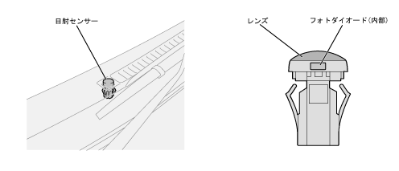

| Sun -radius sensor [Auto air conditioner -equipped car] |
| ● |
The change in the amount of solar radiation is detected as a current change flowing through the built -in photo diode and outputs to the auto aircon anamplic fire.
|
| ● |
The solar radiation sensor with a lens is adopted, the direction of light volume is enhanced, and the sensor sensitivity is set to a higher practical range, so that it has excellent auto air conditioner control performance.In addition, a small one was adopted for the sensor itself, and it was excellent in appearance.
|
| ● |
The mounting position is on the right side of the front defrostar nozzle at the top of the instrument panel.
|
|  |